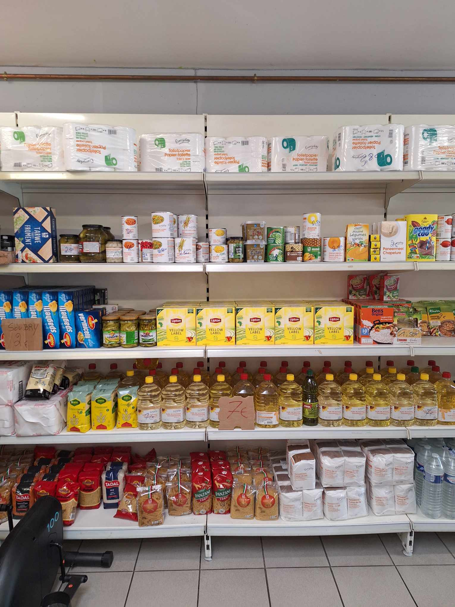
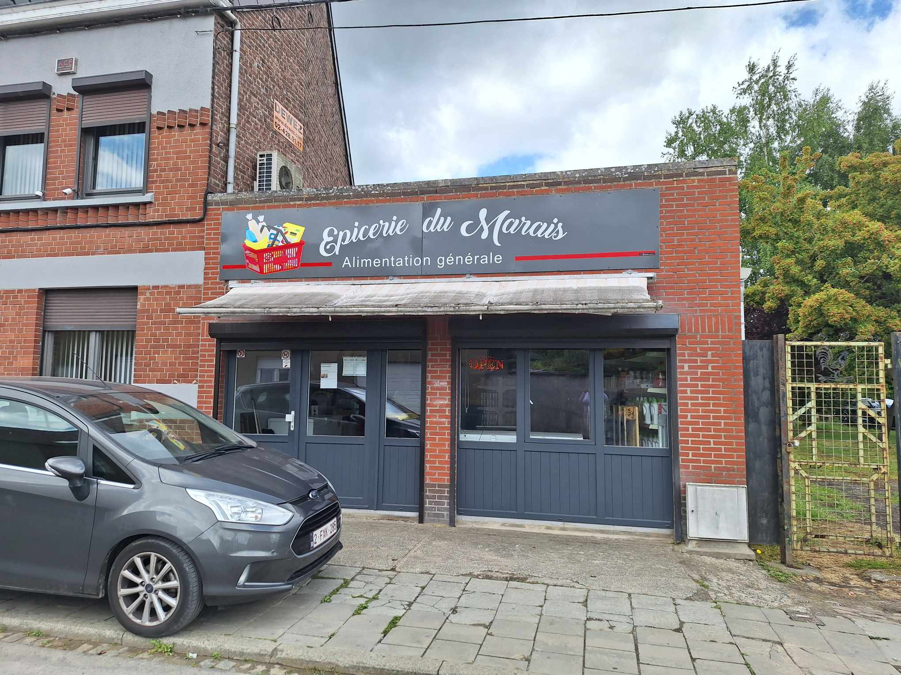
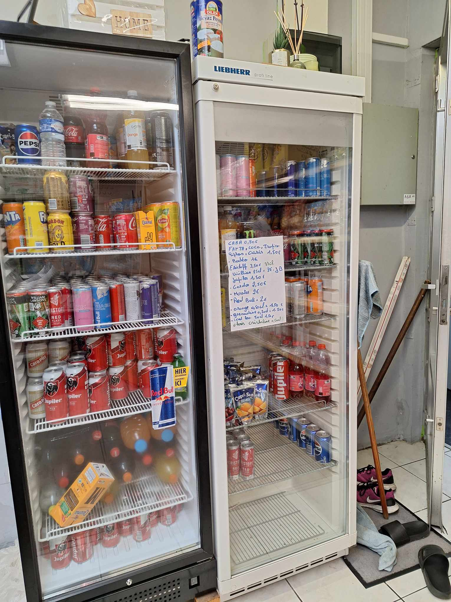
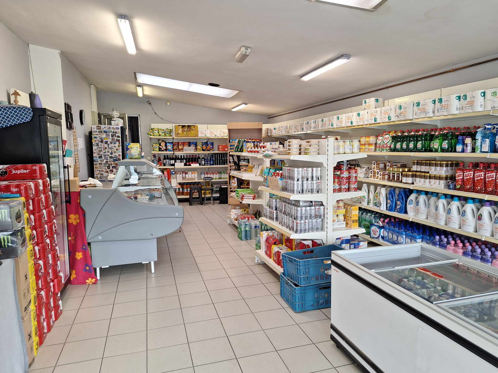

Galerie photos




×

Située au cœur de Quiévrain, à deux pas de la gare et du centre-ville, L'Épicerie du Marais est votre commerce de proximité idéal pour vos courses du quotidien. Notre établissement familial s'engage à vous offrir une expérience d'achat agréable et pratique, avec une large gamme de produits soigneusement sélectionnés pour répondre à vos besoins quotidiens. Des produits d'épicerie aux articles ménagers, en passant par les boissons et les surgelés, nous mettons un point d'honneur à proposer des prix abordables tout en maintenant une qualité irréprochable. Notre équipe chaleureuse et attentionnée est toujours là pour vous conseiller et vous aider à trouver ce dont vous avez besoin.
15 Rue du Marais, 7380 Quiévrain
Lundi - Samedi : 9h - 18h
065 750 858